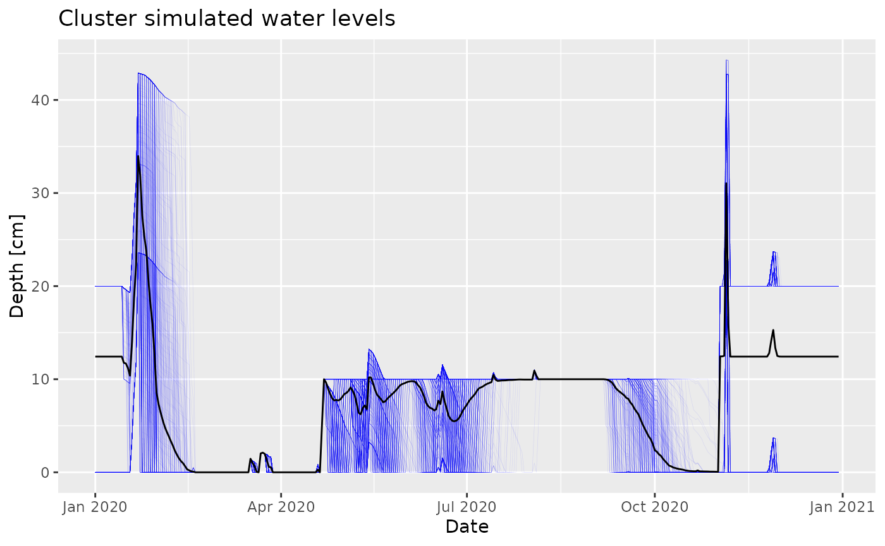

This document illustrates the basic simulation workflow of ERAHUMED. Specifically, we will cover:
- How to setup and run a simulation.
- How to extract and analyze simulation results.
The goal is to provide a practical, step-by-step overview of how to perform simulations. For a detailed explanation of the underlying models, algorithms, and assumptions, refer to the user manual.
This guide is intended for users working with the R interface of the package and is not required for those using only the Shiny GUI.
Running a simulation
The main interface for running simulations in erahumed
is the erahumed_simulation() function:
sim <- erahumed_simulation()
#> Initializing inputs
#> Computing hydrology: lake
#> Computing hydrology: clusters
#> Computing hydrology: ditches
#> Computing exposure: clusters
#> Computing exposure: ditches
#> Computing exposure: lake
#> Computing risk: clusters
#> Computing risk: ditches
#> Computing risk: lake
sim
#> <ERAHUMED Simulation>
#> Date range : 2020-01-01 to 2020-12-31
#> Simulation days : 366
#> Clusters : 552
#> Management systems : 2
#> Chemicals simulated : 8
#> Total applications : 17
#>
#> Need help extracting simulation outputs? Check `?get_results`.This function handles both the setup and execution of a simulation. Simulation parameters are specified via its arguments, and calling the function launches the simulation and returns a fully executed object containing the results (note that this may take some time).
The example above runs a simulation with the default model
parameters. These can be customized via the arguments of
erahumed_simulation(). For instance:
sim2 <- erahumed_simulation(foc_ss = 0.20, foc_sed = 0.07)
#> Initializing inputs
#> Computing hydrology: lake
#> Computing hydrology: clusters
#> Computing hydrology: ditches
#> Computing exposure: clusters
#> Computing exposure: ditches
#> Computing exposure: lake
#> Computing risk: clusters
#> Computing risk: ditches
#> Computing risk: lake
sim2
#> <ERAHUMED Simulation>
#> Date range : 2020-01-01 to 2020-12-31
#> Simulation days : 366
#> Clusters : 552
#> Management systems : 2
#> Chemicals simulated : 8
#> Total applications : 17runs a simulation with modified environmental parameters (fraction of organic content in suspended solid and sediment), while:
sim3 <- erahumed_simulation(date_start = "2019-01-01", date_end = "2019-12-31")
#> Initializing inputs
#> Computing hydrology: lake
#> Computing hydrology: clusters
#> Computing hydrology: ditches
#> Computing exposure: clusters
#> Computing exposure: ditches
#> Computing exposure: lake
#> Computing risk: clusters
#> Computing risk: ditches
#> Computing risk: lake
sim3
#> <ERAHUMED Simulation>
#> Date range : 2019-01-01 to 2019-12-31
#> Simulation days : 365
#> Clusters : 552
#> Management systems : 2
#> Chemicals simulated : 8
#> Total applications : 17runs a simulation over a different date range.
The full set of simulation parameters is documented in the
user manual, as well as in the R documentation page
?erahumed_simulation. We highlight a few special
parameters:
Observational inputs - The
outflows_dfandweather_dfarguments oferahumed_simulation()are data-frames containing time-series data that serve as the empirical basis for ERAHUMED simulations. Further details are provided in the user manual. Thedate_startanddate_endarguments (see above) must fall within the time range covered by these datasets.Rice-field (agrochemical) management system map - The
rfms_mapargument argument is the primary interface for advanced scenario customization, encapsulating the full set of user-defined agrochemical configurations (including custom chemicals and Rice-Field Management Systems, or RFMSs). A conceptual overview of these capabilities is provided in the user manual, while a step-by-step guide to creating custom scenarios is available in a dedicated vignette.Random seed - The
seedargument controls the random number generator used in the simulation, ensuring reproducible results when stochastic elements are involved (e.g., the random order in which rice field clusters are drained during the sowing season). Setting a fixed value allows you to obtain identical results when re-running the same simulation; leaving it unset may produce slightly different outcomes across runs.
Analyzing simulation results
Simulation results are extracted as follows:
lake_hydrology_df <- get_results(sim, component = "hydrology", element = "lake")
cluster_hydrology_df <- get_results(sim, component = "hydrology", element = "cluster")
cluster_exposure_df <- get_results(sim, component = "exposure", element = "cluster")These are provided in the form of data.frames, for
instance:
head(cluster_hydrology_df)
#> date element_id area_m2 is_tancat outflow_m3
#> 1 2020-01-01 02_Carrera_del_Saler0-2_0 114881.78 TRUE 0
#> 2 2020-01-01 03_Petxinar0-3_2 116539.90 TRUE 0
#> 3 2020-01-01 03_Petxinar0-3_3 154730.35 TRUE 0
#> 4 2020-01-01 03_Petxinar1-3_1 163789.56 TRUE 0
#> 5 2020-01-01 03_Petxinar1-3_2 83016.51 TRUE 0
#> 6 2020-01-01 03_Petxinar1-3_3 106260.07 TRUE 0
#> outflow_cm inflow_m3 inflow_cm volume_m3 depth_cm petp_cm
#> 1 0 66.63143 0.058 22976.36 20 -0.058
#> 2 0 67.59314 0.058 23307.98 20 -0.058
#> 3 0 89.74360 0.058 30946.07 20 -0.058
#> 4 0 94.99795 0.058 32757.91 20 -0.058
#> 5 0 48.14958 0.058 16603.30 20 -0.058
#> 6 0 61.63084 0.058 21252.01 20 -0.058From here on, the analysis may proceed in the way you find more
convenient. For instance, in the chunk below I create a plot of water
levels for the whole set of rice field clusters, using
dplyr and ggplot2:
library(dplyr)
library(ggplot2)
clusters_df <- cluster_hydrology_df
avg_df <- clusters_df |>
group_by(date) |>
summarise(depth_cm = mean(depth_cm))
ggplot() +
geom_line(
data = clusters_df,
mapping = aes(x = date, y = depth_cm, group = element_id),
color = "blue", linewidth = 0.1, alpha = 0.1) +
geom_line(
data = avg_df,
mapping = aes(x = date, y = depth_cm),
color = "black"
) +
xlab("Date") + ylab("Depth [cm]") +
ggtitle("Cluster simulated water levels")
Further information
For additional details not covered in this guide, see the other package vignettes. If there is a specific topic you would like to see documented, please let us know by filing an issue on GitHub or by using the contact information provided on the package homepage.